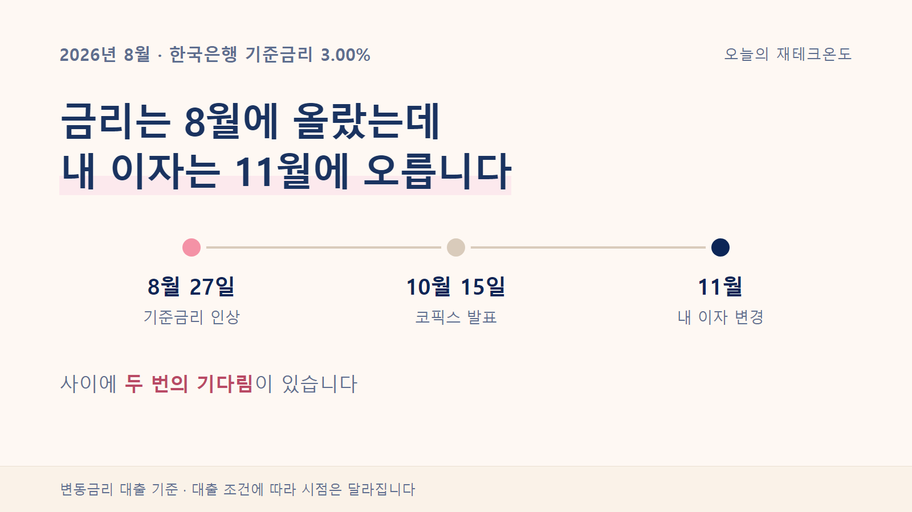
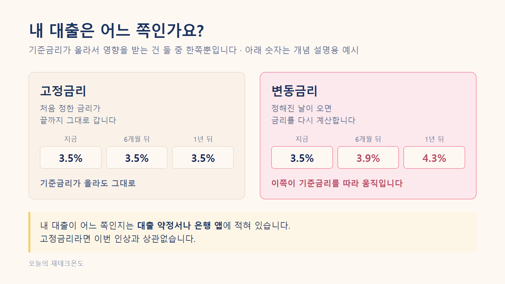
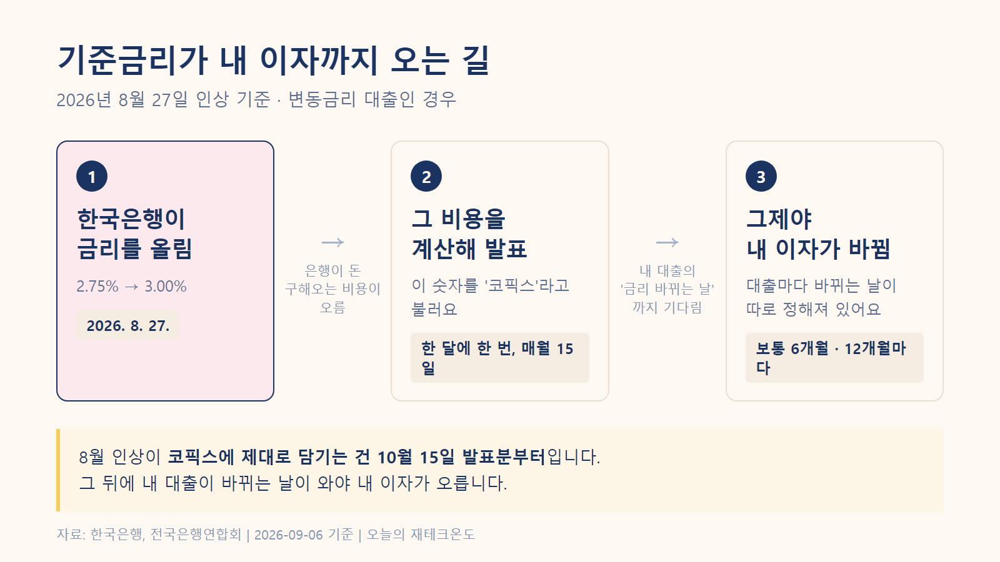
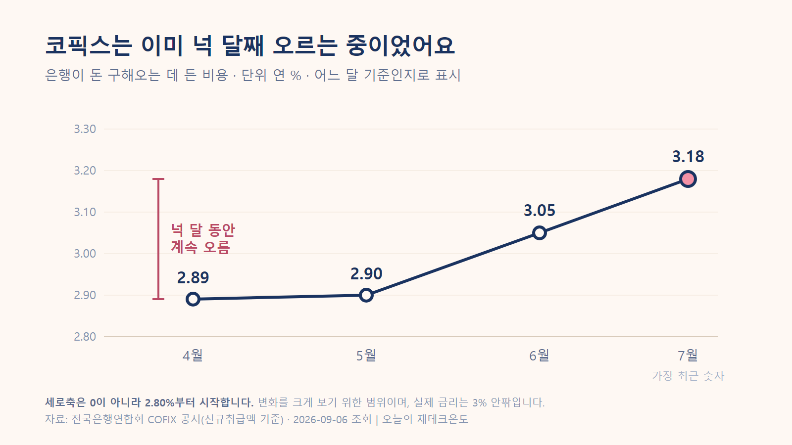
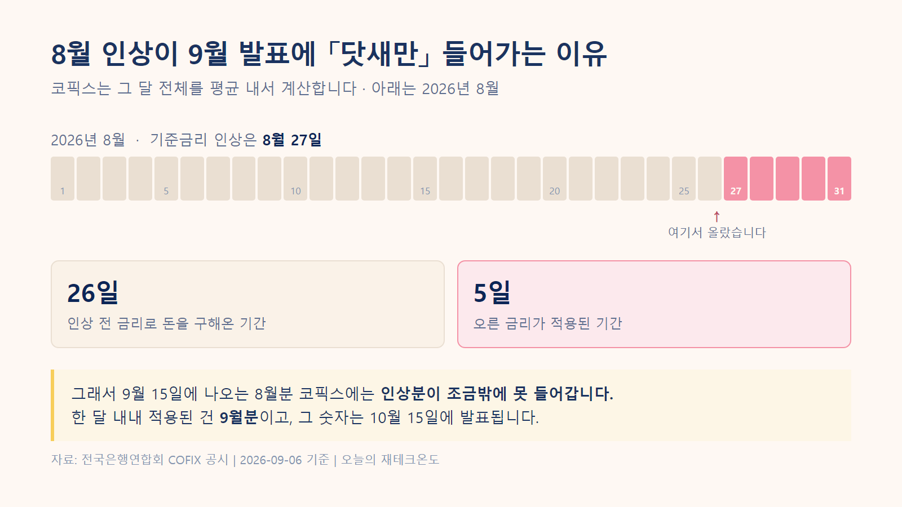
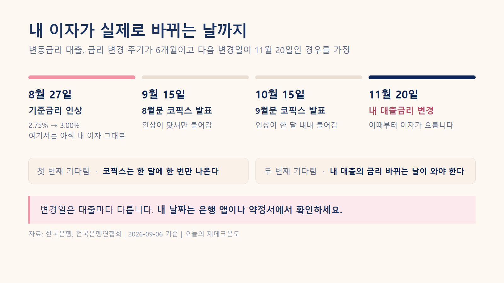

기준금리 3% 됐는데, 내 대출이자는 왜 아직 그대로일까?

"8월에 기준금리 인상 뉴스가 나왔는데, 왜 내 대출이자는 그대로일까?"
대출이 있는 분이라면 한 번쯤 해봤을 생각입니다. 저도 이자가 확 늘어날까 봐 조마조마하며 월급 통장을 확인했는데, 막상 빠져나간 금액은 지난달과 똑같더라고요.
은행이 깜빡한 걸까요, 뉴스가 틀린 걸까요? 둘 다 아닙니다.
알고 나니 내 이자가 언제쯤 오를지 날짜를 셀 수 있게 되더라고요. 경제를 잘 모르는 사회초년생도 한 번에 이해할 수 있게 순서대로 정리해봤습니다.
1. 기준금리가 뭔가요? 왜 올리는 걸까요?
뉴스에서 매번 나오는 그 말, 기준금리는 한국은행이 정하는 "돈의 기본 값"입니다.
은행들은 한국은행이나 시장에서 돈을 구해와서 우리한테 다시 빌려줍니다. 그러니 기준금리가 오르면 은행이 돈 구해오는 비용부터 비싸지고, 우리가 내는 대출이자는 그 뒤를 따라 오릅니다.
그 기준금리를 한국은행이 8월 27일에 연 2.75%에서 3.00%로 올렸습니다. 그런데 찾아보니 이게 처음이 아니었어요.
| 언제 | 기준금리 변화 |
|---|---|
| 기존 | 2.50% |
| 7월 16일 | 2.75% (0.25%포인트 인상) |
| 8월 27일 | 3.00% (0.25%포인트 추가 인상) |
한국은행 기준금리 · 2026년 8월 27일 적용 · 원문 보기
7월에 한 번, 8월에 또 한 번. 6주 사이에 두 번이에요.
왜 이렇게 급하게 올렸을까
물가가 중요한 이유 중 하나였습니다. 한국은행이 8월에 낸 설명을 보면, 물가 오름세가 더 퍼지는 걸 미리 막을 필요가 있다는 이야기가 나옵니다.
실제로 8월 물가는 1년 전보다 3.1% 올랐어요.
그런데 이 3.1%는 조금 걸러서 볼 필요가 있었습니다. 작년 8월에 한 통신사가 전체 가입자 요금을 절반 깎아줬거든요. 그래서 작년 통신비가 유난히 낮았습니다.
올해와 비교하니까 휴대전화료가 26.7% 오른 것으로 잡혔어요. 요금이 실제로 그만큼 오른 게 아니라, 비교 대상이던 작년 숫자가 낮았던 거죠.
물가가 오르는 중인 건 맞습니다. 다만 3.1%를 체감물가로 그대로 읽으면 조금 부풀려 보게 됩니다.
국가데이터처 「2026년 8월 소비자물가동향」(2026-09-02) · 원문 보기 · 상승률은 한국은행 소비자물가지수 원자료에서 직접 계산
2. 내 대출 확인하기: 고정금리 vs 변동금리
우선 내 대출이 어떤 종류인지부터 봐야 합니다. 금리 인상 뉴스에 모두가 긴장할 필요는 없어요.
- 고정금리 — 처음 정한 금리가 만기까지 그대로 갑니다. 이번 인상과 아무 상관이 없습니다.
- 변동금리 — 정해진 주기마다 금리를 다시 계산합니다. 이번 인상의 직접적인 영향을 받습니다.
둘을 나란히 놓으면 이렇습니다.

내 대출이 어느 쪽인지는 대출 약정서나 은행 앱에 적혀 있습니다. 아래 이야기는 변동금리 기준으로 볼게요.

3. 코픽스(COFIX): 기준금리가 내 이자가 되기까지의 시간차
내 대출이 변동금리라고 해서 8월 27일에 바로 이자가 오르진 않습니다. 중간에 코픽스라는 다리가 하나 있거든요.
코픽스는 쉽게 말해 은행들의 평균 조달 원가표입니다. "우리가 이번 달에 돈을 모을 때 비용이 이만큼 들었어요"라고 신고하는 값이죠. 여기에 은행이 각자 남길 몫을 얹으면 그게 우리한테 주는 금리가 됩니다.
문제는 이 원가표가 매일 나오는 게 아니라 한 달에 딱 한 번, 매월 15일에만 발표된다는 점입니다.
다만 모든 대출이 코픽스를 쓰는 건 아니에요. 신용대출처럼 금융채라는 다른 지표를 쓰는 경우도 있습니다.
코픽스는 이미 넉 달째 오르고 있었습니다
찾아보고 저도 좀 놀랐습니다. 4월에 2.89%였던 게 7월에는 3.18%가 됐어요. 0.29%포인트 오른 겁니다.
3억원을 빌렸다면 이것만으로도 1년에 87만원쯤 늘어난 셈입니다. (3억 × 0.29%)

전국은행연합회 COFIX 공시 · 2026년 4월분 2.89% → 7월분 3.18% · 공시 보기
은행들도 이미 움직였고요. 국민은행은 8월 19일부터 변동금리 주택담보대출 금리를 올렸습니다.
한국경제 「코픽스 넉 달째 상승」(2026-08-18) · 기사 보기
그러니까 제 이자가 안 오른 게 아니라, 제 대출은 아직 순서가 안 온 거였습니다.
그런데 8월 인상은 아직 여기 없어요
위 그래프에서 가장 최근 숫자인 7월 기준 3.18%는 8월 18일에 발표된 것입니다. 기준금리가 오른 건 8월 27일이고요.
8월 27일에 오른 금리가 8월 18일에 발표된 숫자에 들어갈 수는 없겠죠. 아직 오르기도 전이었으니까요.
| 코픽스 발표일 | 어느 달 기준인가요? | 8월 인상 반영 여부 |
|---|---|---|
| 8월 18일 발표 | 7월 상황 | 전혀 반영 안 됨 (인상 전이라) |
| 9월 15일 발표 | 8월 상황 | 닷새만 반영됨 (8/27~8/31) |
| 10월 15일 발표 | 9월 상황 | 한 달 전체 반영됨 |
전국은행연합회 COFIX 공시일자 · 일정 보기
달력에 칠해보면 이렇습니다.

즉 8월 인상이 원가표에 온전히 담긴 숫자를 보려면 10월 15일은 되어야 합니다. 은행 앱에서 내 이자율이 당장 안 바뀐 첫 번째 이유예요.
다만 코픽스가 기준금리를 그대로 따라가는 건 아닙니다. 은행이 실제로 돈을 구해온 비용이라서 더 오를 수도, 덜 오를 수도 있어요.
4. 내 통장에서 진짜 돈이 더 나가는 날은 언제일까?
10월에 코픽스가 올라도 그날 모든 사람의 이자가 다 같이 오르는 건 아닙니다. 대출마다 금리가 바뀌는 주기가 계약할 때부터 정해져 있거든요. 보통 6개월이나 12개월입니다.
예를 들어 내 대출의 금리 변동일이 11월 20일이라면 이렇게 됩니다.
- 8월 27일 — 한국은행 기준금리 인상
- 9월~10월 — 내 이자는 여전히 그대로 (아직 순서가 안 옴)
- 11월 20일 — 그날의 최신 코픽스를 가져와 내 이자율을 다시 계산. 이때부터 오른 이자가 적용됩니다.
날짜로 늘어놓으면 이렇게 됩니다.

그래서 지금 제 통장에 아무 변화가 없었던 겁니다. 아직 11월이 안 왔으니까요.
5. 그래서 한 달에 얼마를 더 내야 할까?
이자가 오르는 건 정해진 일이니, 마음의 준비를 위해 대략이라도 계산해봤습니다.
7월과 8월에 오른 만큼인 0.5%포인트가 내 대출금리에 그대로 전해진다고 가정한 단순 계산입니다.
「0.5% 올랐다」와는 다른 말이에요. 퍼센트끼리의 차이는 헷갈리지 않게 퍼센트포인트로 씁니다.
| 빌린 돈 | 1년에 더 내는 이자 | 한 달로 나누면 | 이게 어느 정도냐면 |
|---|---|---|---|
| 1억원 | 50만원 | 약 4만원 | 한 달 통신비의 4분의 1쯤 |
| 3억원 | 150만원 | 약 12만 5천원 | 한 달 통신비의 70%쯤 |
| 5억원 | 250만원 | 약 21만원 | 한 달 통신비보다 많은 돈 |
비교 기준은 국가데이터처 「2026년 1분기 가계동향조사」(2026-05-28) · 가구당 월평균 정보통신 지출 17만 6천원 · 원문 보기
1억원을 빌렸다면 한 달에 약 4만원, 3억원이라면 약 12만 5천원이 더 나갑니다.
12만 5천원이 얼마나 큰 돈인지 감이 잘 안 오실 텐데요. 우리나라 가구가 한 달에 쓰는 통신비가 평균 17만 6천원입니다. 그러니까 통신비 한 달치에 조금 못 미치는 돈이 매달 더 빠져나가는 셈이에요.
한 달 생활비 전체로 보면 4% 정도입니다. 크지 않아 보여도 매달, 그리고 대출이 남아 있는 내내 나가는 돈이라 고정 지출을 한 번 점검해볼 이유는 됩니다.
다만 이건 이자만 놓고 본 대략적인 계산입니다.
매달 원금까지 같이 갚는 방식이라면 빌린 돈이 조금씩 줄어들어서 실제 나가는 돈은 이보다 적어져요. 기준금리가 오른 만큼 대출금리가 100% 그대로 따라간다는 보장도 없고요.
정확한 금액이라기보다 "대충 이 정도 규모구나" 감을 잡는 용도로 봐주시면 됩니다.
자주 묻는 질문
기준금리가 오르면 대출이자는 언제부터 오르나요?
변동금리 대출이라면 두 가지를 거쳐야 해요. 먼저 코픽스 같은 지표금리에 들어가고, 그다음 내 대출의 금리 바뀌는 날이 와야 합니다. 이번 8월 27일 인상은 빨라도 10월, 대출 조건에 따라 더 늦어질 수도 있어요.
기준금리가 올랐는데 이자가 그대로면 은행이 실수한 건가요?
아니에요. 원래 이렇게 시간이 걸리는 구조입니다. 지표금리가 한 달에 한 번만 나오고, 내 대출도 정해진 날에만 금리를 다시 계산하거든요.
코픽스는 언제 발표되나요?
매월 15일에 전국은행연합회가 공시합니다. 이때 나오는 숫자는 그 전달을 기준으로 계산한 값이에요. 9월 15일에 나오는 건 8월 숫자입니다.
고정금리 대출도 기준금리가 오르면 이자가 오르나요?
오르지 않습니다. 고정금리는 처음 정한 금리가 끝까지 그대로 가요. 기준금리를 따라 움직이는 건 변동금리 쪽입니다.
내 대출이 코픽스를 쓰는지 어떻게 아나요?
대출 약정서나 은행 앱의 대출 상세조회에서 볼 수 있어요. 신용대출은 코픽스가 아니라 금융채 같은 다른 지표를 쓰는 경우도 있습니다.
기준금리가 0.5%포인트 오르면 이자는 얼마나 늘어나나요?
3억원을 빌렸고 그만큼 대출금리에 그대로 전해진다면 1년에 약 150만원, 한 달로 나누면 약 12만 5천원이에요. 이자만 놓고 본 단순 계산입니다.
결론: 그래서 오늘 당장 무엇을 확인해야 할까?
여기까지 읽으셨다면, 지금 바로 은행 앱을 켜서 내 대출의 다음 금리 변경일이 언제인지 확인해보세요.
그 날짜부터 내 통장 잔고가 달라집니다. 미리 알아두면 소비 계획을 조정할 시간을 벌 수 있어요.
- 은행 앱을 열고 대출 상세조회로 들어갑니다
- 고정금리인지 변동금리인지 봅니다 (고정이면 여기서 끝입니다)
- 변동금리라면 어떤 지표를 쓰는지 봅니다 (코픽스인지 금융채인지)
- 금리 변경 주기를 봅니다 (6개월인지 12개월인지)
- 다음 금리 변경일을 달력에 적어둡니다
- 늘어날 이자만큼 이번 달부터 예비비를 조금씩 모아둡니다
다음에 기준금리가 올랐다는 뉴스를 봤을 때
"그래서 내 이자는 언제부터 바뀌는데?"
이 질문에 답할 수 있으면 됩니다.